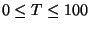
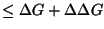
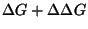
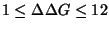
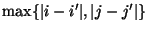
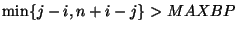
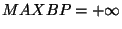

These command line parameters can only be fully understood when the meaning of the different type of output files, described in the next subsection, is known.
SEQ : The user must supply the name of a sequence file, called `file_name' here. If `file_name' ends with a suffix, that is, a period (`.') followed by other characters, then the suffix is removed and the result is called `fold_name'. If no periods exist in `file_name', then `fold_name' = `file_name'. For example, if the sequence is stored in `trna.seq', then `file_name' becomes `trna'. If, on the other hand, the sequence file is named `trna-file', then `file_name' becomes `trna-file'. The `file_name', which may contain periods, becomes the `prefix' for all the output files, such as `file_name.out', `file_name.det' and others.
Accepted sequence file formats are GenBank, EMBL, FASTA and IntelliGenetics. The sequence file may contain multiple sequences. At present, the mfold script will fold the first sequence by default. A new command line variable, NUM=`#' may be added that directs the script to fold the `#'th sequence in the input file.
AUX : This is the name of an auxiliary input file of folding constraints. If this parameter is not used, mfold looks for a file named `fold_name.aux'. If this file exists and is not empty, then it is interpreted as a constraint file. Thus constraints may be used without the use of this command line parameter.
RUN_TYPE : This parameter takes on 2 values; `text', by default, and `html' otherwise. The text option creates plain text files for the `fold_name.out' and `fold_name.det' files described below. The html option creates HTML versions of these files for display with a web browser.
NA : This parameter takes on 2 values; `RNA' by default, and `DNA' otherwise. It tells mfold what type of nucleic acid is being folded.
LC : This parameter takes on 2 values; `linear' by default, and `circular' otherwise. It indicates to mfold whether a linear or circular nucleic acid is being folded.
T : This is the temperature, in °C. By default, it is 37°C. Non-integral values will be rounded down to the nearest integer. Values should be in the range .
P : This is the percent suboptimality for computing the energy dot plot and suboptimal foldings. The default value is 5%. This parameter controls the value of the free energy increment, . is set to P% of , the computed minimum free energy. The energy dot plot shows only those base pairs that are in foldings with free energy . Similarly, the free energies of computed foldings are in the range from to . No matter the value of P, mfold currently keeps in the range  (kcal/mole).
W : This is the window parameter that controls the number of
foldings that are automatically computed by mfold . `W' may be thought
of as a distance parameter. The distance between 2 base pairs, i.jand i'.j' may be defined as
.
Then if
k-1 foldings have already been predicted by mfold , the kthfolding will have at least W base pairs that are at least a distance
W from any of the base pairs in the first k-1 foldings. As Wincreases, the number of predicted foldings decreases. If W is not
specified, mfold selects a value by default based on sequence length,
as displayed in Table 3.
|
MAXBP : A base pair i.j will not be allowed to form (in linear RNA) if j-i > MAXBP. For circular RNA, a base pair i.jcannot form if  MAXBP$">. Thus small values of MAXBP ensure that only short range base pairs will be predicted. By default, , indicating no constraint.
MAX : This is the maximum number of foldings that mfold will compute (50 by default). It is better to limit the number of foldings by careful selection of the P and W parameters.
ANN : This parameter currently takes on 3 values. 1. `none' : secondary structures are drawn without any special annotation. Letters or outline are in black, while base pairs are red lines or dots for GC pairs and blue lines or dots for AU and GU pairs. 2. `p-num' : Colored dots, colored base characters or a combination are used to display in each folding how well-determined each base is according to the P-num values in the `fold_name.ann' file. 3. `ss-count' : Colored dots, colored base characters or a combination are used to display in each folding how likely a base is to be single-stranded according to sample statistics stored in the `fold_name.ss-count' file. Both 2. and 3. were recently described [38].
START : A segment to be folded is selected from the entire sequence. START is the first base, and is 1 by default.
STOP : This is the last base in the folded segment. It is the entire sequence length by default.
REUSE : This parameter is either N (no, the default) or Y (yes). mfold creates a large save file, `fold_name.sav' that contains all the input parameters and the arrays of minimum folding energies for all sub-fragments of the folded sequence. This file, especially for large sequences, is expensive to create. If REUSE is `Y', then a file named `fold_name.sav' should exist from a previous run. You must specify the sequence file. Any (new) constraint file will be ignored, since constraints from the initial folding will be used. Similarly, NA, LC, T, MAXBP, START and STOP are determined from the initial run. However, RUN_TYPE, P, W, MAX and ANN may be altered to give different numbers of foldings, different energy dot plots, and/or different types of structure annotation.
Additional command line parameters for future development are discussed in the section on ``Future plans''.
 | Michael Zuker Institute for Biomedical Computing Washington University in St. Louis 1998-12-05 |